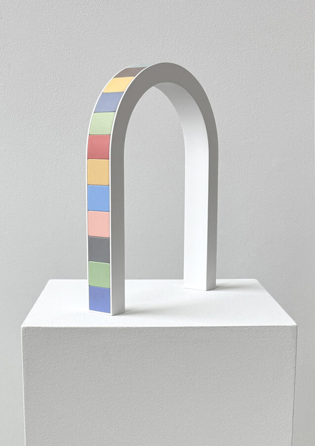

Perry Pollock: Interplay
McHenry County College is thrilled to host Perry Pollock’s solo exhibition, “Interplay.”
Artist Reception: Wednesday, February 18
3:30-4:30 p.m. — Gallery One, A212
January 20 – February 20, 2026
McHenry County College | Galleries One & Two
8900 U.S. Highway 14, Crystal Lake, IL 60012 ──────────────────────
ARTIST STATEMENT
The painted wood constructions in this exhibition focus on the interplay of shape, color, and edge. Some works reference objects of childhood play – gameboards, blocks, or candy – but fundamentally they explore visual and tactile qualities within a geometric framework.